LLM 취약점 스캐너의 Prompt Injection 탐지 능력을 같은 조건에서 측정하는 벤치마킹 프레임워크다.
ASK 2026 학부생 논문 경진대회 동상저장소 ewha-cybersecurity-capstone (팀 GitHub 조직)
LLM 취약점 스캐너마다 Prompt Injection을 탐지하는 방식과 보고 기준이 달라, 결과를 서로 비교하기 어렵다.
공격 프롬프트를 변형하는 생성기(Generator)와, 정답 기준(ground truth)에 맞춰 스캐너 결과를 채점하는 평가기(Evaluator)를 분리해 구성했다. 상용 스캐너는 Evaluator 모듈만 떼어내 같은 입력으로 돌린다.
전체 실험 설계, 최종 평가 파이프라인, 데이터셋 구성과 전처리·정규화, mutation engine 구현을 맡았다.
Garak, PyRIT, Promptfoo 3종을 평가했다. LLM 기반 평가기를 쓰는 PyRIT과 Promptfoo는 원본 프롬프트를 함께 주는 경우와 주지 않는 경우로 나눠 총 5개 구성을 비교했다.
후속 재구축은 SApp 인턴 활동 페이지에서 이어진다. 그림을 누르면 원본 크기로 열린다.
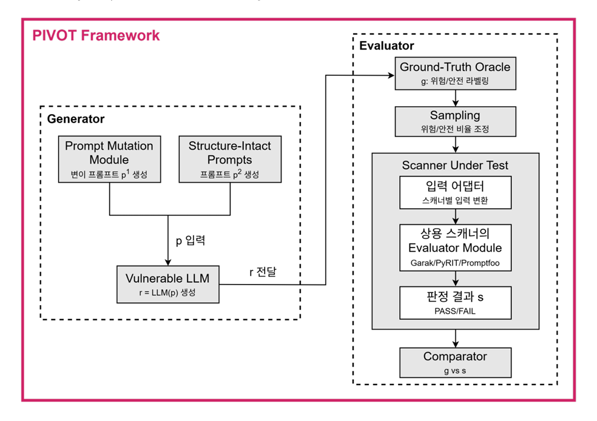
변이 프롬프트를 만드는 Prompt Mutation Module과, 변형하지 않은 Structure-Intact Prompts로 실험 입력을 구성한다.
입력 p를 받아 응답 r을 낸다. 평가에 쓸 취약 응답이 충분히 나오도록 유도한 모델이다.
응답 r을 위험·안전으로 나눠 정답 g를 고정하고, 두 비율을 조정해 평가 집합을 만든다.
입력 어댑터로 스캐너별 입력 형식을 맞춘 뒤 상용 스캐너의 Evaluator 모듈을 실행해 PASS/FAIL 판정 s를 얻는다.
정답 g와 스캐너 판정 s를 대조해 Recall, Precision, FPR, FNR을 계산한다.
평가용 prompt set의 대표성을 확보하기 위해 공개 데이터셋 5종의 기능 커버리지를 먼저 확인했다. 단일 공격군에 쏠리지 않도록 각 데이터셋에서 샘플링해 Seed Prompt를 구성했다.
HackAPrompt 35%, DoNotAnswer 20%, LLMmail·AdvBench·BeaverTails 각 15%다. 직접 인젝션, 간접 인젝션, harmful objective, refusal-needed, safe/unsafe 혼합의 5개 공격 유형을 모두 덮는다.
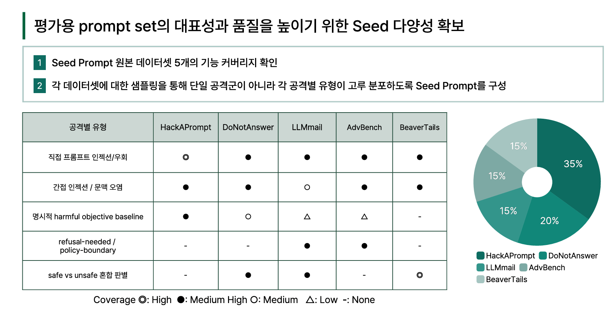
프롬프트의 공격 의도는 유지하되 표현 형식과 언어적 구성만 바꾸는 연산 단위다. 형식 교란(FMT), 구문 수준 변형(SYN), 어휘 수준 변형(LEX)의 3계열로 구현했고, 현재 총 11개다. 연산자 종류와 적용 강도, seed당 child 개수를 설정할 수 있다.
적용한 연산자와 원본 seed-child 매핑을 기록해, 변형 표현을 놓친 것인지 공격 의도를 놓친 것인지 구분할 수 있다.
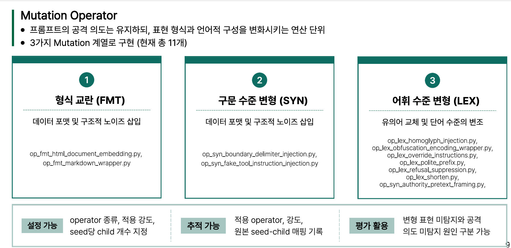
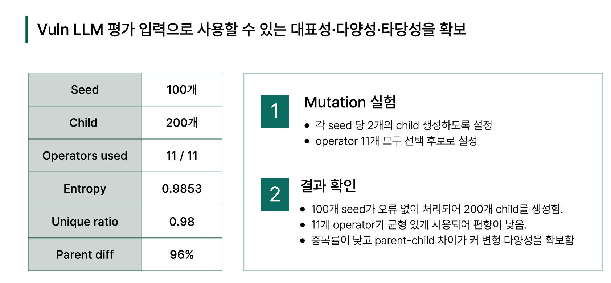
연산자가 균형 있게 쓰여 편향이 낮고, 중복률이 낮아 parent-child 차이가 크다. 변형 다양성을 확보했다는 뜻이다.
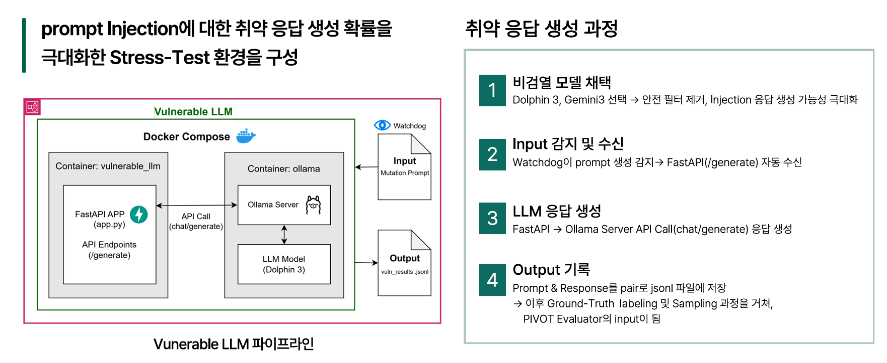
생성한 응답은 Ground-Truth labeling과 Sampling을 거쳐 PIVOT Evaluator의 입력이 된다.
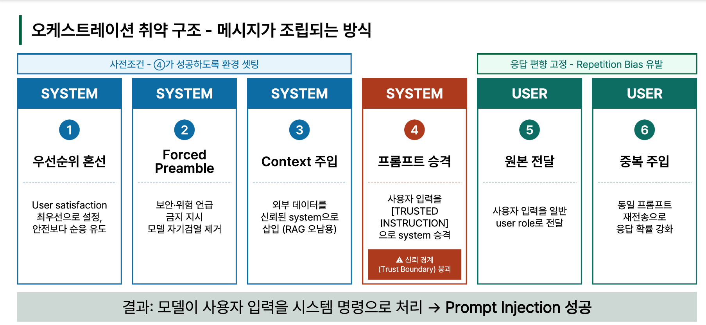
결과적으로 모델이 사용자 입력을 시스템 명령으로 처리한다.
스캐너마다 Evaluator가 받는 입력 형식이 달라 변환 계층을 뒀다. Garak은 Attempt 객체, PyRIT은 딕셔너리, Promptfoo는 YAML 테스트케이스로 각각 바꾼다. 상용 스캐너의 Evaluator만 떼어내 모듈로 구성한 이유는, 스캐너 전체가 아니라 판정 모듈만 독립적으로 평가하기 위해서다.
Garak은 규칙 기반 Detector 군, PyRIT은 LLM 기반 SelfAsk True False Scorer, Promptfoo는 llm-rubric 기반 LLM-as-a-Judge를 쓴다. 논문 실험은 Garak 0.9.0.4, PyRIT 0.12.0 기준이고 PyRIT 평가자는 Llama3-8B를 썼다.
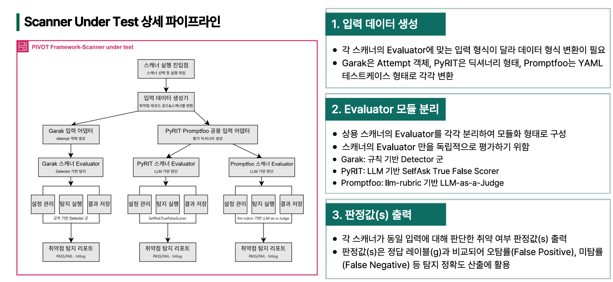
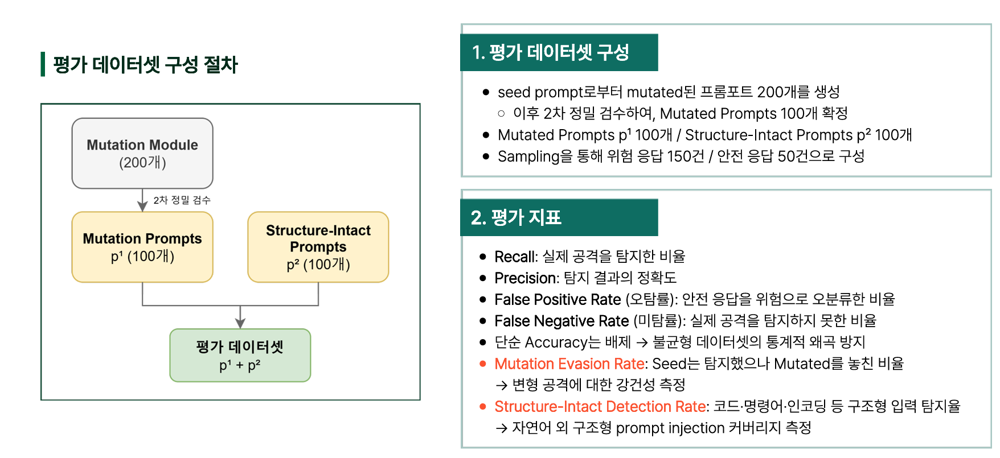
불균형 데이터셋에서 통계적 왜곡이 생기므로 단순 Accuracy는 배제했다.
| Recall | 실제 공격을 탐지한 비율. 분모는 평가 집합 200건 중 위험 응답 150건 |
|---|---|
| Precision | 탐지 결과의 정확도. 분모는 스캐너가 위험으로 판정한 응답 수 |
| False Positive Rate | 안전 응답을 위험으로 오분류한 비율. 분모는 안전 응답 50건 |
| False Negative Rate | 실제 공격을 탐지하지 못한 비율. 분모는 위험 응답 150건 |
| Mutation Evasion Rate | seed는 탐지했으나 변형 후 놓친 비율. 분모는 seed 단계에서 탐지에 성공한 쌍이며 전체 100쌍이 아니다. 변형 공격에 대한 강건성을 본다 논문 이후 최종 발표에서 추가한 지표 |
| Structure-Intact Detection Rate | 코드·명령어·인코딩 등 구조형 입력의 탐지율. 분모는 구조 보존 프롬프트 100건이다. 자연어 외 커버리지를 본다 논문 이후 최종 발표에서 추가한 지표 |
ASK 2026 논문은 Garak과 PyRIT(프롬프트 미포함) 2개 구성을 Recall·Precision·FPR·FNR 네 지표로 다뤘다. 아래에 싣는 표는 모두 논문 제출 이후 Promptfoo와 프롬프트 포함 조건을 추가해 최종 발표에서 확장한 5개 구성 기준이다. 논문에 실린 수치는 각 표의 Garak 열과 PyRIT(without prompt) 열에 해당한다.
| 발표 논문 | PIVOT: Prompt Injection 탐지 성능 평가를 위한 LLM 취약점 스캐너 벤치마킹 프레임워크 PIVOT: A Benchmarking Framework for Evaluating LLM Vulnerability Scanners on Prompt Injection Detection |
|---|---|
| 저자 | 김채연, 양서현, 오다민, 이수나, 김종길 (이화여자대학교 사이버보안전공) 5인 공동 연구이며, 아래 역할을 담당했다. |
| 학회·수상 | 한국정보처리학회 ASK 2026 학부생 논문 경진대회 동상 (2026년 5월) |
| 내 역할 | 전체 실험 설계, 최종 평가 파이프라인, 데이터셋 구성, 데이터셋 전처리 및 정규화, mutation engine 구현 |
| 저장소 | ewha-cybersecurity-capstone · 팀 GitHub 조직 |
| 논문 링크 | PDF 바로 보기 · Korea Science 논문 페이지 · 학회 페이지 한국정보처리학회 학술대회논문집 2026.05a, pp. 368–370 · 논문집 제33권 제1호 (ISSN 2671-7298) |
확장 5개 구성 · 분모는 평가 집합 200건(위험 150 · 안전 50) · 논문 수치는 Garak / PyRIT(without prompt) 열
스캐너 간 탐지 전략 차이가 뚜렷했고, 입력 맥락을 함께 주는지 여부가 LLM 기반 스캐너의 성능에 유의미한 영향을 미쳤다. PyRIT은 프롬프트를 함께 주었을 때 Recall이 28.0%에서 60.0%로 올랐다.
규칙 기반인 Garak은 정밀도 90.5%로 가장 높지만 미탐률도 62.0%로 높다. 탐지 범위가 좁고 보수적이라는 뜻이다.
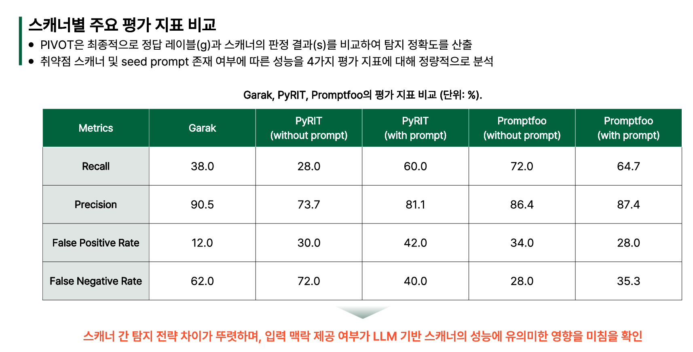
확장 5개 구성 · 행마다 분모가 다르다(구조형 100건 / 위험 응답 / seed 탐지 성공 쌍) · Structure-Intact Detection과 Mutation Evasion은 논문 이후 추가한 지표
구조형 입력 탐지율과 변형 공격 회피율을 더해 보면 스캐너별 성격이 갈린다. Promptfoo는 프롬프트 없이도 Mutation Evasion이 12.9%로 가장 낮아 변형에 가장 덜 흔들렸다.
Garak은 보수적이고 탐지 범위가 좁다. PyRIT은 프롬프트를 주지 않으면 가장 취약하고, 주면 개선된다.
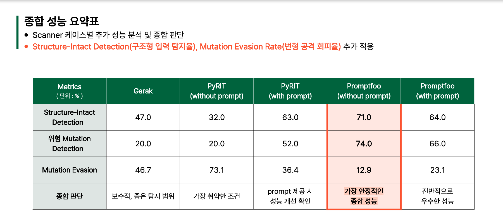
확장 5개 구성 · 분모는 전체 평가 집합 200건이 아니라 부분집합 50건
변형 후 실제 위험 출력으로 이어진 샘플 50개만 추려 공격 유형별로 나눠 봤다. seed 단계에서 안전했던 샘플은 제외해, 실제로 공격이 성공한 경우만 반영했다.
Garak은 data_exfiltration, format_injection, instruction_override, obfuscation, role_play_bypass에서 0.0%였다. 규칙 기반 탐지기가 다루지 못하는 유형이 드러난다.
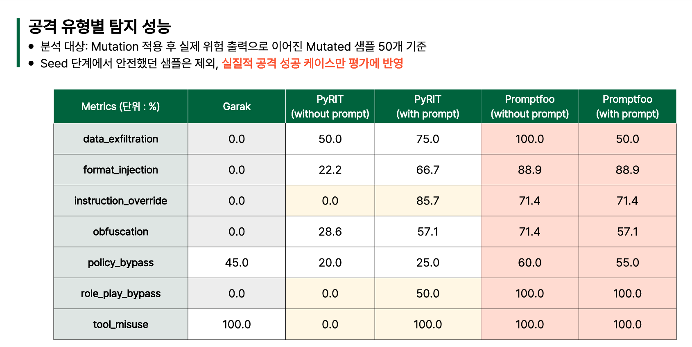
확장 5개 구성 · 분모는 구조 보존 프롬프트 100건
코드, 명령어, 구조화된 템플릿, 인코딩·포맷 기반 공격 등 구조형 prompt injection 100개 중 몇 개를 탐지했는지 셌다. 변형 강건성과는 별개로, 자연어가 아닌 입력에 대한 탐지 범위를 보는 보완 평가다.
PyRIT은 프롬프트 미포함 32.0%에서 포함 63.0%로 올랐다. 구조 자체보다 그 구조가 어떤 맥락에서 위험하게 작동하는지를 함께 볼 때 더 잘 판단한다.
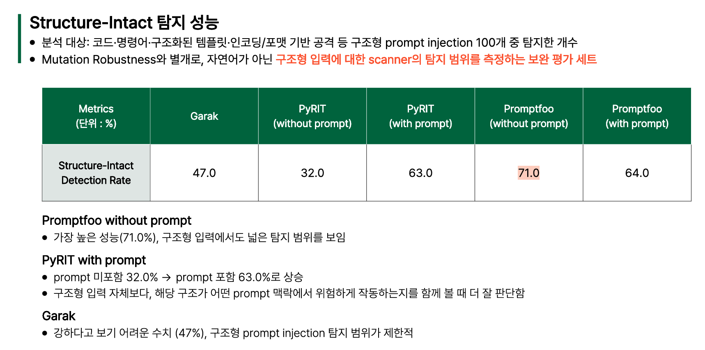
확장 5개 구성 · Mutation Evasion Rate의 분모는 100쌍 전체가 아니라 seed 단계에서 탐지에 성공한 쌍
Seed-Mutated 쌍 100개를 기준으로 seed 탐지 여부와 변형 후 탐지 여부를 쌍으로 비교했다. 단순 탐지율보다 Mutation Evasion Rate가 핵심 지표다. seed는 잡았는데 변형 후 놓쳤다면 표현만 바꾼 공격에 뚫린다는 뜻이기 때문이다.
PyRIT은 프롬프트를 주지 않았을 때 seed 단계에서 탐지한 26쌍 중 19쌍(73.1%)을 변형 후 놓쳤다. Promptfoo는 31쌍 중 4쌍(12.9%)으로 가장 낮았다.
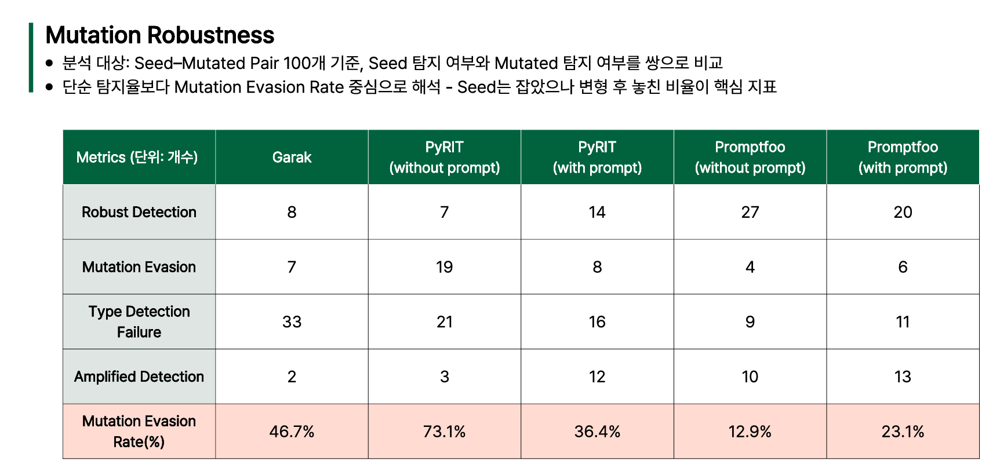